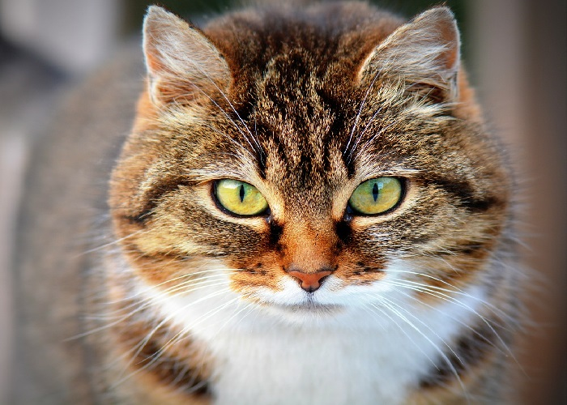
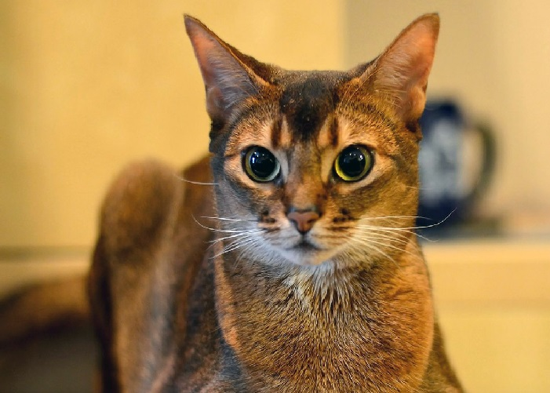
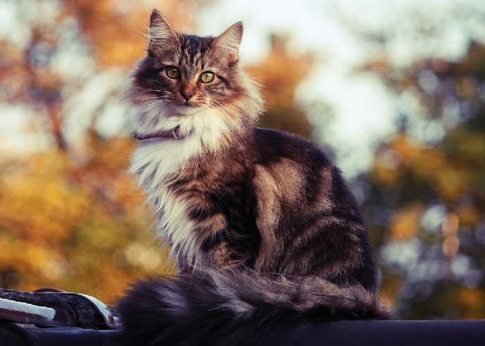
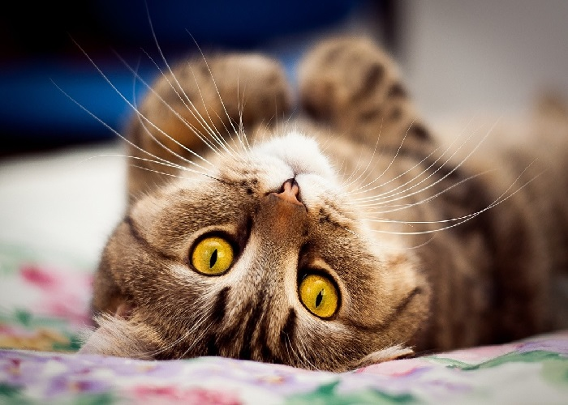
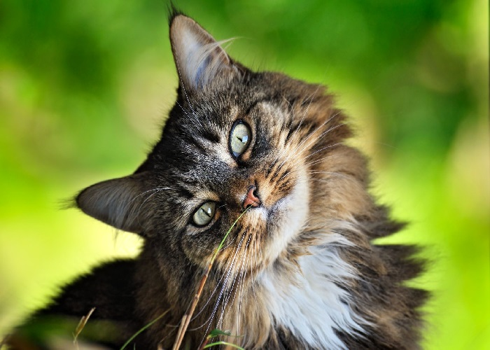
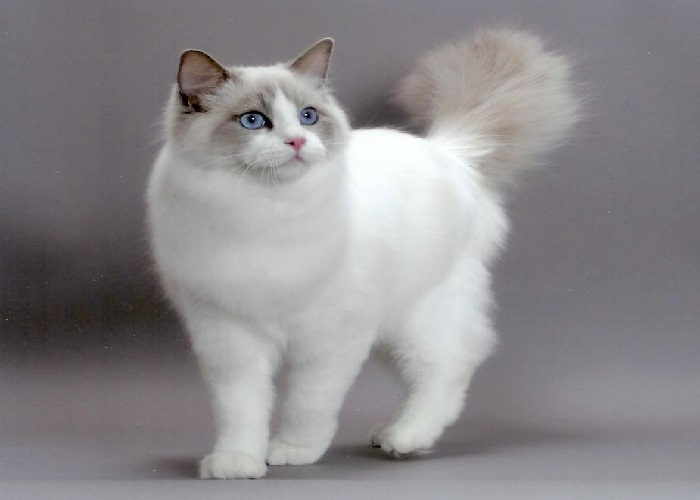
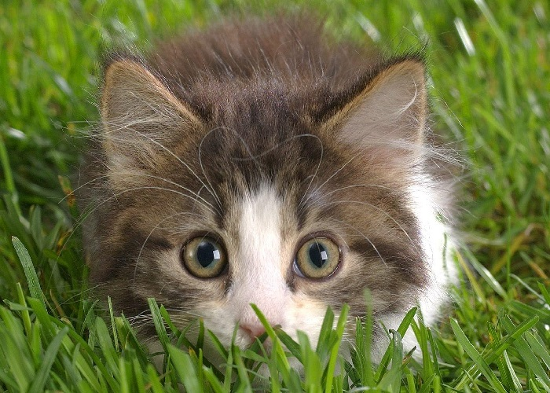
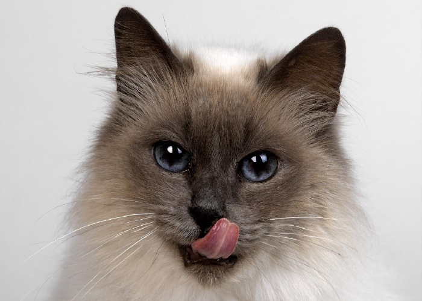
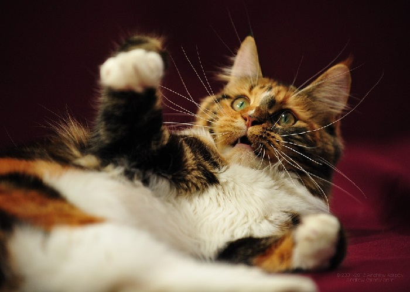

Бонифаций
Возраст: около 6 месяцев
Порода: нет
Болезни: нет
Статус: ищет хозяина
Дружелюбный, ласковый, ручной.
Возраст ~ 6 месяцев
С другими котами в дружных отношениях. Можно взять в пару к домашнему питомцу, или в паре с
сестричкой Лаской.

Захар Алексеевич
Возраст: 3 года
Порода: Бенгальский кот
Болезни: нет
Статус: ищет хозяина
Очень ласковый и игривый.
Возраст 3 года
Любимая игрушка - тряпичная змея. Часто закидывает ее в труднодоступные места, а потом жалобно
просит достать её. Любит скидывать вещи с любых поверхностей.

Аполлинария Вячеславовна
Возраст: 1 год
Порода: Абессинская кошка
Болезни: болит правое ушко
Статус: хозяин найден!
Красивая кошка с суровым характеромю
Возраст 1 год
Претендует на макисмальное внимание к себе со стороны хозяина. Ревнует ко всем находящимся
поблизости котам и кошкам.
Требуется лечение ранки на правом ушке.

Красотка
Возраст: около 5 месяцев
Порода: Мейн-кун
Болезни: нет
Статус: ищет хозяина
Ласковая, послушная, породистая девочка.
Возраст ~ 5 месяцев
Желательно забрать в паре с ее сестричкой Лапочкой. Игривая, не шкодливая, очень ориентрирована
на хозяина.

Ласка
Возраст: около 6 месяцев
Порода: нет
Болезни: нет
Статус: ищет хозяина
Дружелюбная, ласковая, ручная.
Возраст ~ 6 месяцев
С другими котами и кошками в дружных отношениях. Можно взять в пару к домашнему питомцу, или в
паре с братиком Бонифацием.

Лапочка
Возраст: около 5 месяцев
Порода: Мейн-кун
Болезни: нет
Статус: ищет хозяина
Ласковая, послушная, породистая девочка.
Возраст ~ 5 месяцев
Желательно забрать в паре с ее сестричкой Красоткой. Игривая, не шкодливая, очень ориентрирована
на хозяина.

Пуша
Возраст: около 9 месяцев
Порода: Британская кошка
Болезни: нет
Статус: хозяин найден!
Добрая, смелая, ловкая
Возраст ~ 9 месяцев
Кошка с очень независимым нравом. Боится холода и грозы. Идеальна для бизнесмена,
работающего на дому.

Лилу
Возраст: около 2 месяцев
Порода: нет
Болезни: нет
Статус: ищет хозяина
Игривая малышка
Возраст 2 месяцев
Доброжелательна к другим котам и кошкам. Стремится постоянно играть. Идеально подойдет в пару к
имеющемуся домашнему животному. Одна в квартире начнет тосковать.

Льдинка
Возраст: 2 года
Порода: Невская маскарадная кошка
Болезни: нет
Статус: ищет хозяина
Вредная, своенравная, но под настроение ласковая.
Возраст 2 года
Из животных охотно контактирует только с Пухлей и Лилу. С человеком наедине очень ласковая. Любит
смотреть на закат и рассвет.

Пухля
Возраст: 1.5 года
Порода: нет
Болезни: проблемы со зрением
Статус: хозяин найден!
Прожорливый, немного глупый, но добрый.
Возраст ~ 1.5 года
Порой путает дверь со стеной. Может начать играть с носком, свернутым в комок, но не из желания
испортить вещь человека, а просто потому что перепутал его со своим мячиком. Любит проводить
время с Лилу.